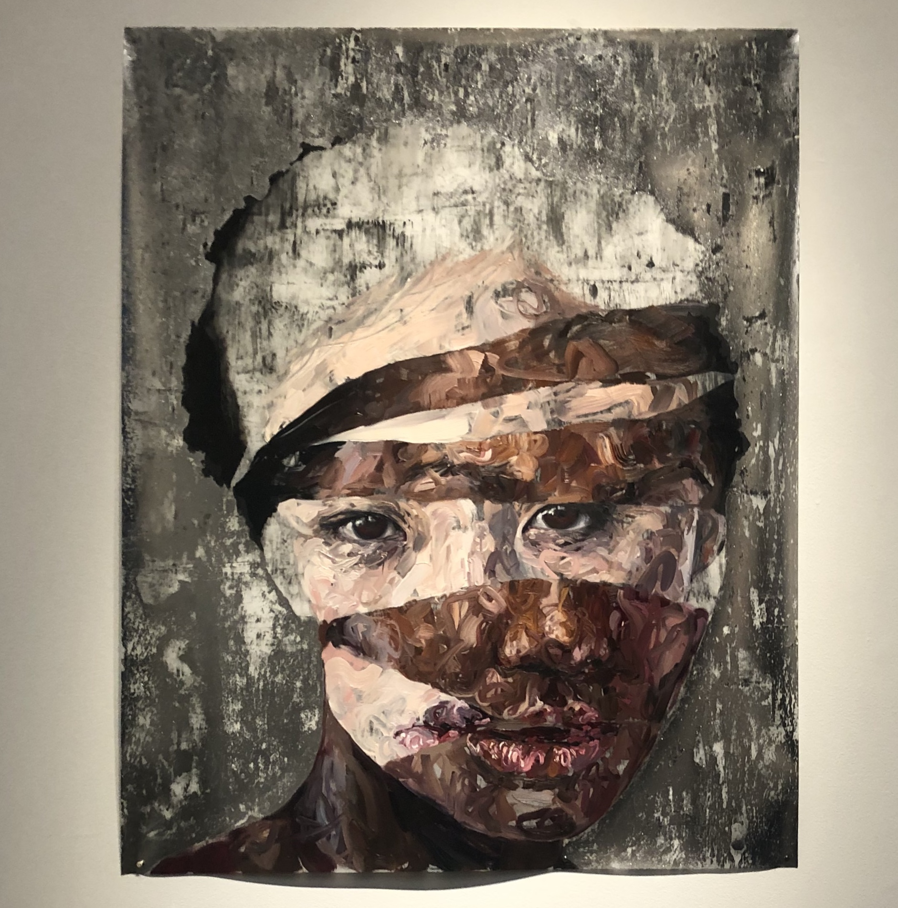

As far as a voice you can’t hear or remember, Oil on canvas, 72 x 96 inches.
It is important to note that this work is part of a larger curation of works all created by women to voice their narratives. The name is “Overlap Life Tapestries: the warp - systemic marginalization, and the weft - intersecting identities, weave a tapestry of visibility and validation.” The exhibition is defined by women identify they have been discriminated based not only on gender but national origin, race, social position, and historical forces. Fighting for gender equality has been at the core of the Pen + Brush organization for 125 years.
Fraleigh has created this painting as a means to comment on cultural perceptions reimagining women’s role. This is a highly immersive that is quite literally larger than life. The colors and highlights are vibrant and reflective, creating a glossy finish. The intimate nature of the female subject is emphasized by the way she stares into the viewers eyes and hands emerge from the background to grasp her. The setting and background are completely eliminated adding question what exactly is going on and a dream-like feel. No one explains her work better than herself:
“My work is about how meaning gets made and questions how cultural narratives are applied, structured and how that comes to shape our experiences in the world. I weave together realism and abstraction in lush and complex works, ranging from intimate portraits to monumental figure paintings that reimagine women’s roles in art history, literature, and contemporary media. Recently, my practice has become site-specific in nature and has led to collaboration with institutions to mine invisible hosties or dormant narratives in their collections.”